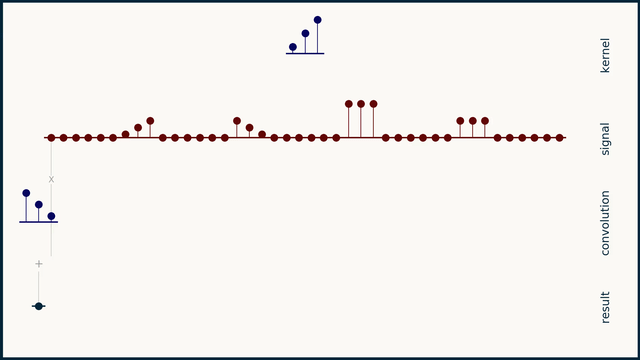
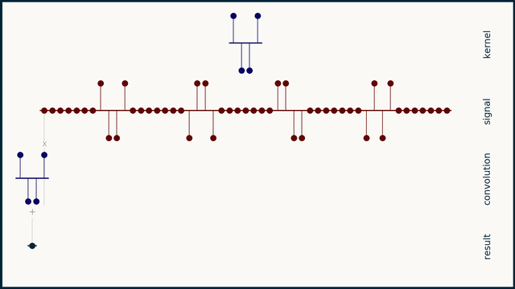
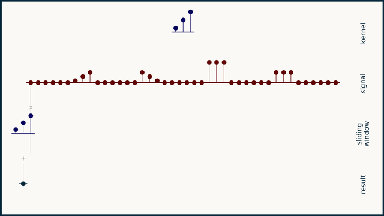
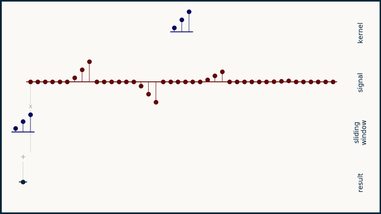

tl;dr
The thing that has surprised me the most about convolution is that it’s used in neural networks as a feature detector, but it’s pretty bad at detecting features. Convolution is AMAZING at filtering, smoothing, sharpening, even differentiation to arbitrarily high orders, but it’s a sad feature detector. Here is a feature (kernel) convolved with a signal that contains a) that exact feature b) the feature reversed c) a large square wave d) a small square wave
The magnitude of the result doesn't show the quality of the match. If it did, it would be at a maximum for a), a copy of itself. Instead, it peaks when convolved with c), the large square wave. It shows poor sensitivity for matching itself. The one condition where convolution becomes a great feature detector is when both kernel and signal are limited to two values, a high and a low. (Think an image where each pixel can only be black or white, 1-bit grayscale.) Here kernel feature is convolved with signal containing a) the exact feature b) the negative of the feature c) and d) two non-matching features.

It reaches a maximum when aligned with a) and a minimum when aligned with b), exactly as we would expect a good feature detector to do A useful way to interpret a convolutional kernel is - positive values mean "prefer the signal value to be as high as possible" - negative values mean "prefer the signal value to be as low as possible" - zeroes mean "don't care what the signal value is here" There are no kernel values that mean "prefer the signal to have a particular value" or even "prefer the signal to have a middle-range value." Only "high as possible", "low as possible", and "don't care." Perhaps not coincidentally, this makes convolution a perfect feature detector for the MNIST digits data set. Convolution is a sliding dot product between the kernel and the section of signal it's aligned with. Dot product alone makes a bad similarity metric, and hence a bad feature detector. But normalize both vectors to a magnitude of 1, and it becomes the cosine similarity. [wikipedia] A sliding cosine similarity window would be an incremental improvement to feature detection in "convolutional" neural networks (cosine neural networks?). For you NN historians, have you heard of such a thing being tried? Here's what the same feature detection problem looks like using cosine distance. The winning candidate (the first one) does indeed have the highest peak value by a slim margin. A kind of success.There are two hyperparameters we can add to improve this distance metric even more. Cosine similarity varies between zero and one with one being peak similarity. We can sharpen this peak by raising it to a power to an exponent, p. Here is the same example, with cosine similarity raised to the 16th power, that is p = 16. Much better.

The other thing to watch out for is that cosine similarity will match very small-magnitude signals. In general, this magnitude invariance is desirable. But taken to an extreme, we may end up matching background noise rather than signal. We can add another parameter, q, the magnitude of the expected noise floor, to the signal and kernel magnitudes. This will prevent matches from registering against noise rather than signal. Here's the whole story: When we test scale invariance with q = .01, we see a good match against the feature, its negative, and its 50% magnitude. The 5% magnitude version doesn't make a blip though. It's too small to be interesting.

